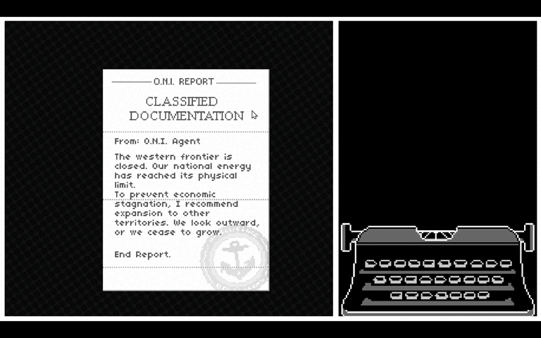
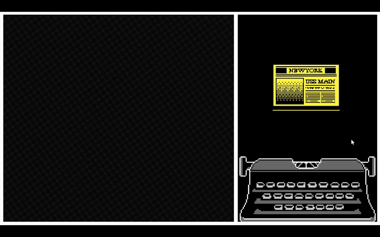
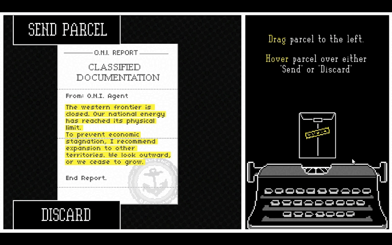
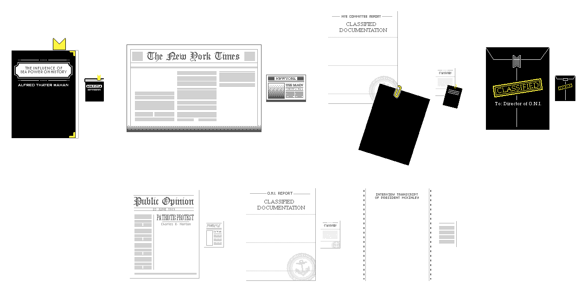
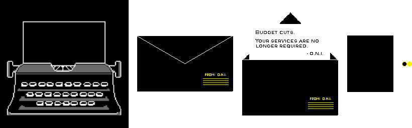

O.N.I. Acts of Omission
May 2026About Game
The player is a typist for the Office of Naval Intelligence (1890–1929) who transcribes intelligence reports and decides whether to send or discard each one.
Across four days and nine primary-source documents, the game traces American imperialism from the Spanish-American War to World War I.
➤ Developed for my high school AP Capstone Research project.
➤ Role: Solo Developer
Solo Programmer
I built every system and drew every asset in the game with Unity 2022.3 between March and May 2026.
- Programmed the core typing system: word-by-word input checking, live mistake feedback, and words-per-minute tracking.
- Built a two-desk document system, where each paper can be dragged between a small copy and a large, readable copy.
- Wrote a data-driven content pipeline. Documents, chapter cards, and subtitles all load from plain text files.
- Implemented a timer that adjusts to the player's own typing speed.
- Built the Send/Discard decision and a voicemail system that reacts to each choice.
- Created the audio layer: a named sound-effect library, music that persists across scenes, and subtitled voice lines.
- Handled the game flow across a menu, four day scenes, and an ending, with fades and an end-of-day results screen.
- Locked the game to a 16:9 ratio with letterboxing, so it displays correctly on desktop and in the browser.
- Drew the 2D pixel art: the desk, the typewriter and its keys, the period documents, and the UI.
- Set up a GitHub Actions workflow that exports the accompanying research paper from Google Docs each night and commits it to the repository as a PDF.
Mechanics
Typing and Input Validation
The typing system reads raw keyboard input each frame and checks it against one target word at a time with a prefix match. Feedback is rendered with TextMeshPro rich text: correct characters in white, the rest of the word as grey ghost text, and a mistake in yellow. A mistake locks input until it is backspaced, and each error is logged for the results screen.

Linked Documents Across Two Desks
Each document spawns as a pair of prefabs: a small copy at the typewriter and a large, readable copy on the other desk. Each copy holds a reference to its partner. When a dragged copy crosses the desk boundary, it hands the drag to its partner at the cursor, so the paper appears to resize mid-drag.
Draw order is handled by a shared stack. Clicking a document moves it to the top and reassigns the z-depth of every document and its children.
Data Parsing and Document Pipeline
All document data loads from text files before the first scene, so no content is hard-coded into scenes.
- Parsing. Documents.txt is loaded as a TextAsset, split on every line-ending style, and trimmed. A // line closes each day, producing a List<List<string>> of days and documents.
- Indexing. Two indices walk this list: a day index, parsed from the scene name with int.TryParse, and a document index. Out-of-range requests return a sentinel string instead of throwing.
- Spawning. The spawner slices flat Inspector lists of prefabs into per-day batches using the parsed counts, so art and text stay in order. Each document's string is then split into a word array for the typing validator.
- Other files. Chapter cards reuse the // format, and voice transcripts are parsed with a regex into timestamped subtitle lines.
// MainDataset.cs// Loads Documents.txt before the first scene and splits it into days.// Each line is one document; a "//" line ends the current day.[RuntimeInitializeOnLoadMethod(RuntimeInitializeLoadType.BeforeSceneLoad)]private static void Initialize() => LoadData();private static void LoadData(){ TextAsset textFile = Resources.Load<TextAsset>(DocumentName); // . . . string[] allLines = textFile.text.Split( new[] { "\r\n", "\r", "\n" }, StringSplitOptions.None); List<string> currentGroup = new List<string>(); foreach (string line in allLines) { string trimmedLine = line.Trim(); if (trimmedLine == "//") // End of a day { if (currentGroup.Count > 0) { DocumentGroups.Add(new List<string>(currentGroup)); currentGroup.Clear(); } } else if (!string.IsNullOrWhiteSpace(trimmedLine)) { currentGroup.Add(trimmedLine); } } // . . .}Adaptive Timer
Each document's time limit scales to the player: its word count divided by the player's measured WPM, plus a 15-second grace period. WPM uses the standard five-characters-per-word formula and only counts time spent actively typing. On timeout, an event marks the report late and skips the decision step.

Branching Reactions
After each document, the player sends or discards the report by dragging it onto a tray. The outcome (Send, Discard, or Late) is combined with the day and document index into a file key, such as Day1_Doc2_Send. If a matching audio clip and transcript exist, a voicemail plays before the next document; if not, the game moves on. A new reaction needs only two files and no code.

Architecture
Systems communicate through static C# events (the observer pattern) instead of direct references. For example, one typing-state property drives the keys, the text, the carriage, and the paper exit through a single event.
Persistent singletons carry the game state, timer, and music across scenes, and re-bind to each new scene's objects on load. The camera is letterboxed to 16:9 and recalculated on window resize, which keeps the WebGL build correct in fullscreen.
// TypewriterKey.cs// One static property controls whether the player can type.// Changing it fires an event instead of calling other scripts directly.public static event Action<bool> OnCanTypeChanged;public static bool CanType{ get => _canType; set { if (_canType == value) return; _canType = value; OnCanTypeChanged?.Invoke(_canType); }}// PaperFadeExit.cs (one of several listeners)private void OnEnable() => TypewriterKey.OnCanTypeChanged += HandleExitTrigger;private void OnDisable() => TypewriterKey.OnCanTypeChanged -= HandleExitTrigger;private void HandleExitTrigger(bool canType){ // Typing just ended: slide the finished page out if (!canType && !_isExiting) StartCoroutine(ExitRoutine());}Art
I drew all of the game's art as 2D pixel art. Most documents were drawn twice, at two sizes, one for each desk.
- The desk background and the game icon.
- The typewriter body, its sliding carriage, and ten key sprites.
- Period newspapers and magazines, including The New York Times, The Boston Globe, and The Nation.
- Government papers: a congressional transcript, the Nye Committee report, intelligence bulletins, and a report form.
- A booklet and two-page documents with open and closed states, and a statistical graph.
- The parcel, the final letter, and a blinking cursor animation.


Research & Story
The game's narrative is built on real historical sources. I read the primary documents collected in The American Spirit, Volume II, by Thomas A. Bailey and David M. Kennedy.
From these I selected and condensed speeches, headlines, and government reports into the nine documents the player transcribes, arranged across four chapters from 1890 to 1929.